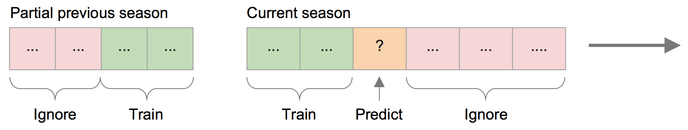
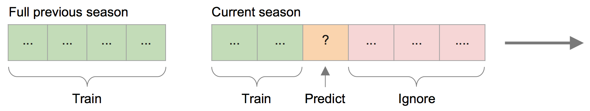
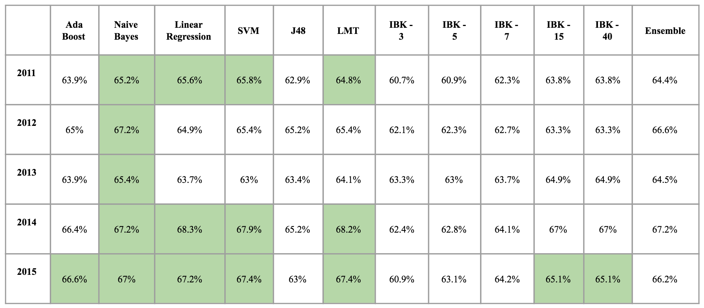
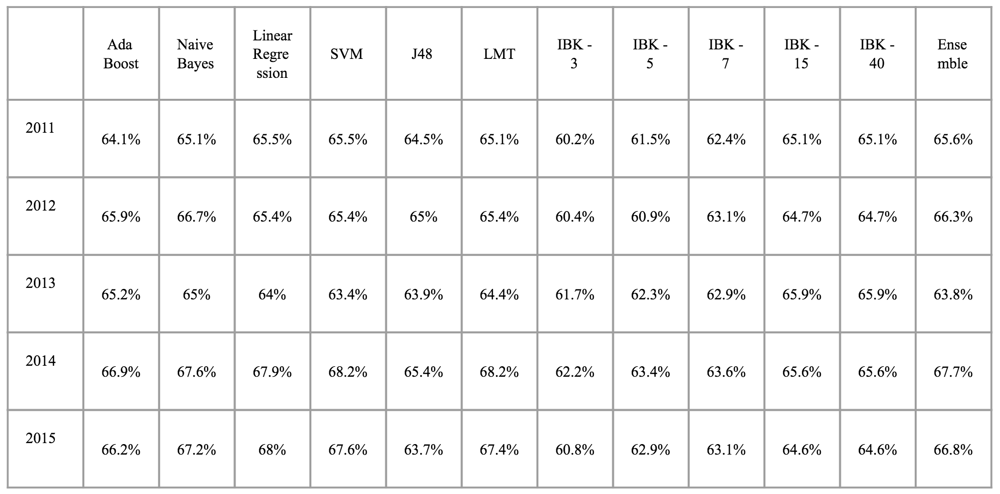
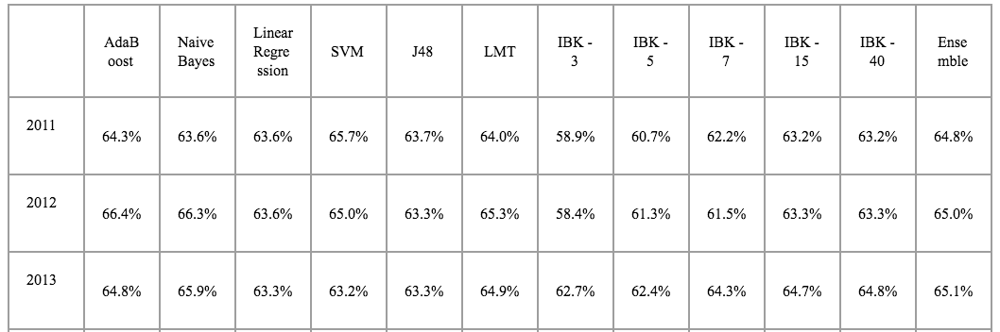

Basketball is one the most popular games in the United States and also has much popularity abroad. It began as a simple gym exercise in the late 1800’s and slowly moved from high schools and into colleges. Finally, in the early 1950’s, the National Basketball Association (NBA) emerged as a major governing body of the professional version of the game. Ever since, the NBA has presided over a yearly tournament between official professional teams from all over North America. The annual tournament is called a season. During a season, each team competes against others several times and track their wins and losses. After a number of games (in the hundreds), the 16 teams with the most wins compete against each other in an elimination style tournament called the Playoffs. Playoff matches are best four out of seven. The team that wins the Playoffs win the whole season.
Our goal in this project is to attempt predicting the outcome of Basketball matches before they happen based on the characteristics of the two teams that are competing. While this may not be something that will benefit humanity in a great way, there a still some interesting applications of such predictions. For example, fantasy basketball is a virtual game where players can create teams based on real players and earn ranking based on the performance of their selected basketball players in real life. It may be beneficial for them to be able to predict how various teams will do and pick real players based on that. Fantasy Basketball, and fantasy sports in general generate millions a year.
Our approach consisted of the following steps: collecting metrics, preprocessing the data, and using several classification methods. A considerable amount of time and effort was spent collecting new data for the latest NBA seasons, as well as collecting novel data such as player injury information.
Before a strategy for training and testing on classifiers could be devised, the relevant data had to be collected. The official API for raw NBA statistics is not free for developer, so an alternate data source was found at stats.nba.com/stats. It took a considerable amount of time to go over the API and filter out data that was not useful. The resulting data consisted of individual game statistics, information about active teams based on the year and information about individual players. In its original format, there was not much that could be done with the data for machine learning purposes, so other metrics were devised based on what was available.
One last feature that was included was player injury count. Every team usually has one or two “star” players who on average perform better than the rest of their teammates. The presence of these players drive the performance of the whole team, so the outcome of a single game can be determined by whether or not the star players are present. It would be beneficial to know if any members of the current team are injured and cannot participate in a match. http://www.prosportstransactions.com/basketball/ provides details about when players are injured and when they recover, at which point they would once again be able to play. The data is presented in tables through html, but no api is provided. It would have been too time consuming to manually copy the necessary data from the site into the necessary formats. As such, a web crawler was developed that reads the data from the web pages, extracts relevant information and stores it in a database for later processing.
All of the collected data was preprocessed and aggregated into game records. A game record represents a real game in a season, and contains metrics leading p that game. Based on the research done by Torres et. al in "Prediction of NBA games based on Machine Learning Methods", we collected metrics based on some of the most useful team-centric metrics, such as average win/loss percentages for both teams participating in each game. We also needed to tie in the injury information into each game record. In summary, our preprocessors created game records such that all metrics (or features) took into account all games that were chronologically prior to the given game record. These game records were then labelled with the correct winning team.
In order to predict the outcome of a game, several machine learning algorithms were used: K-Nearest Neighbors, Linear Regression, Support Vector Machines, J48 Decision Tree, Logistic Model Tree, Naive Bayes, AdaBoost, and a custom majority vote ensemble. The performance of each algorithm was measured using 10-fold cross validation, and tuned accordingly.
Once each algorithm was appropriately tuned, game prediction was done in one of two ways. In the first approach, each classifier was trained on a subset of the previous NBA season. The more data that was trained on for the current season, the less data was trained on from the prior season. Intuitively, we expected this to be more accurate than always training on the full previous season, which was our second approach. After training on either a subset or the full previous season, the classifiers were also trained with the entire current season prior to the game being predicted. This approach essentially gave us an "online" classifier which allows us to predict NBA games before they even happen. Both models are illustrated below.
Training on a partial previous season:
Training on the full previous season:
First, we present the results of training classifiers on a portion of last seasons data to test the new season. For 2011, the best algorithm was the SVM with an accuracy of 65.8%. In 2012 it was the Naive Bayes with an accuracy of 67.2%. In 2013, the best algorithm again was the Naive Bayes with 65.4. In 2014, Linear Regression yielded the best accuracy with 68.3 %. Finally, in 2015 the SVM tied the LMT with an accuracy of 67.4%.
Next we present the accuracy results when training against the full previous season when predicting each game. In 2011, the ensemble method had the highest accuracy with 65.6%. In 2012, the best classifier was the Naive Bayes with an accuracy of 66.7%. In 2013, K-Nearest Neighbors outperformed others with 65.9% accuracy for both 15 and 40 neighbors respectively. In 2014, both LMT and SVM tied for the best accuracy with 68.2%. Finally, in 2015, Linear Regression was the best algorithm with an accuracy of 68%.
Finally, we present the accuracy results when taking into account player injury data for each game. In 2011, the SVM had the highest accuracy with 65.7%. In 2012, AdaBoost had the highest accuracy with 66.4%. Finally, in 2013, Naive Bayes had the highest accuracy with 65.9%. Here, K-Nearest Neighbors with K = 40 performed better in a single instance than the same algorithm with K = 15.
All of the results across all used algorithms are available on our demonstration page.
As explained in the results section, the injury count did not significantly change the performance of the classifiers. One explanation is that the number of injured players does not take into account the importance of the missing players into account. Calculating the importance a single player would involve analyzing their point contribution over the course of their career on their current team. Next, each player on the team would receive an importance score based on how much they contributed in the season relative to their teammates. A simple method would be dividing the contribution of each player by the sum of points scored during the season. Once an importance metric is in place, we can numerically determine how much a team can be affected by missing players as a feature for each team in a match. Unfortunately, we did not have time accomplish this for our current project. However, we have all the data necessary to finish it in the future.
Renato Amorim Torres. Prediction of NBA games based on Machine Learning Methods. Project report. (2013), http://homepages.cae.wisc.edu/~ece539/fall13/project/AmorimTorres_rpt.pdf.
Matthew Beckler, Hongfei Wang. NBA Oracle. Project report. (2008), http://www.mbeckler.org/coursework/2008-2009/10701_report.pdf.
Lori Hoffman, Maria Joseph. A Multivariate Statistical Analysis of the NBA. Project Report. (2003), http://www.units.miamioh.edu/sumsri/sumj/2003/NBAstats.pdf.
I. H. Witten and E. Frank. 2005. Data mining: Practical machine learning tools and techniques. (2005). http://www.cs.waikato.ac.nz/ml/weka/index.html
Colet, E. and Parker, J. Advanced Scout: Data mining and knowledge discovery in NBA data. Data Mining and Knowledge Discovery, Vol. 1, Num. 1, 1997, pp 121 – 125.
Orendorff, David, and Johnson, Todd. First-Order Probabilistic Models for Predicting the Winners of Professional Basketball Games. Project report. http://www.ics.uci.edu/dorendor/basket.pdf
Babak, Hamadani. Predicting the outcome of NFL games using machine learning. Project Report for CS229, Stanford University. http://www.stanford.edu/class/cs229/proj2006/BabakHamadaniPredictingNFLGames.pdf